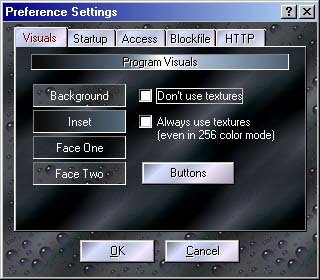

Here is where several of the Proxomitron's global settings can be changed. Click a tab and area for an explanation of its function.

The "Visuals" Tab
Here you can control the look of Proxomitron. You can turn textured backgrounds on or off (you'll need to save and reload the config first though), or select different background images to use. Most any windows bitmap (.BMP) file can be used as a background in Proxomitron.
 Return to main index
Return to main index